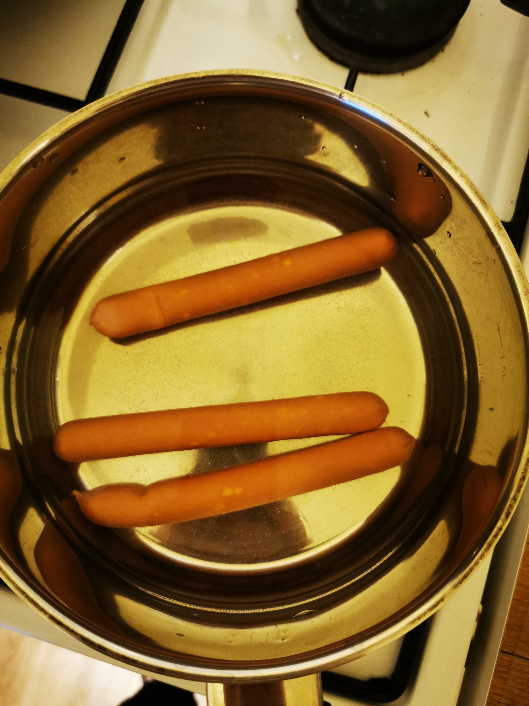

Cold brew sausages water
Refreshing drink perfect for hot summer days

Step by step guide:
- Take you favorite sausages out of the packaging.
- Put sausages into the cold water.
- Stir clockwise with spoon 10 times.
- Taste the water to see if it has right aroma - If it's too weak repeat step no. 3. If it's too strong add some water. If perfect proceed to the next step
- Pour the extract to the cup. Serve chilled with favorite additives.
Tip: To avoid waste of sausages, eat them afterwards.
Back to main page